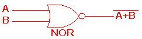

Logic Gates
Features
Types of Logic Gates
- A logic gate is an elementary building block of a digital circuit.
- Most logic gates have two inputs and one output.
- At any given moment, every terminal is in one of the two binary conditions low (0) or high (1), represented by different voltage levels.
- The low voltage state is approximately zero volts (0 V), while the high state is approximately five volts positive (+5 V).
- There are seven basic logic gates
- AND:
- Output is true (1) only in case both inputs are true (1).
- It is represented as :

- The truth table is as shown below:
| Input A | Input B | Output |
|---|
| 0 | 0 | 0 |
| 0 | 1 | 0 |
| 1 | 0 | 0 |
| 1 | 1 | 1 |
- OR:
- Output is true (1) in case any one or both inputs are true (1).
- It is represented as :

- The truth table is as shown below:
| Input A | Input B | Output |
|---|
| 0 | 0 | 0 |
| 0 | 1 | 1 |
| 1 | 0 | 1 |
| 1 | 1 | 1 |
- NOT:
- Output is true (1) in case input is false (0). It works on a single input.
- It is also called complement.
- It is represented as:

- The truth table is as shown below:
- XOR (EOR):
- Output is true (1) if and only if one of the input is true (1).
- Output is false (0) if both the inputs are true (1) or both the inputs are false(0).
- It is represented as:

- The truth table is as shown below:
| Input A | Input B | Output |
|---|
| 0 | 0 | 0 |
| 0 | 1 | 1 |
| 1 | 0 | 1 |
| 1 | 1 | 0 |
- NAND:
- It is NOT or complement of AND.
- Output is true (1) if both the inputs are false (0) or both the inputs are not false(0).
- It is represented as:

- The truth table is as shown below:
| Input A | Input B | Output |
|---|
| 0 | 0 | 1 |
| 0 | 1 | 1 |
| 1 | 0 | 1 |
| 1 | 1 | 0 |
- NOR:
- It is NOT or complement of OR.
- Output is true (1) if and only if both the inputs are false(0)
- It is represented as:

- The truth table is as shown below:
| Input A | Input B | Output |
|---|
| 0 | 0 | 1 |
| 0 | 1 | 0 |
| 1 | 0 | 0 |
| 1 | 1 | 0 |
- XNOR (ENOR):
- It is NOT or complement of XOR.
- Output is true (1) if both the inputs are true (1) or both the inputs are false(0).
- It is represented as:

- The truth table is as shown below:
| Input A | Input B | Output |
|---|
| 0 | 0 | 1 |
| 0 | 1 | 0 |
| 1 | 0 | 0 |
| 1 | 1 | 1 |
Universal Gate
- A universal gate is a gate which can implement any Boolean function without need to use any other gate type.
- Below are two universal gates
NAND gate as a universal gate
| Input A | Input B | NAND Output | AND Output | OR Output | NOT Output (for Input A) |
|---|
| 0 | 0 | 1 | 0 | 0 | 1 |
| 0 | 1 | 1 | 0 | 1 | 1 |
| 1 | 0 | 1 | 0 | 1 | 0 |
| 1 | 1 | 0 | 1 | 1 | 0 |
- AND gate using NAND gate
- OR gate using NAND gate
- NOT gate using NAND gate
- If both the inputs are same in case of NAND gate, it will become a NOT gate
| Input A | Input B | NAND Output | AND Output |
|---|
| 0 | 0 | 1 | 0 |
| 1 | 1 | 0 | 0 |
- If one of the input is 1,
NOR gate as a universal gate
- AND gate using NOR gate
- OR gate using NOR gate
- NOT gate using NOR gate
Examples
Frequently Asked Questions